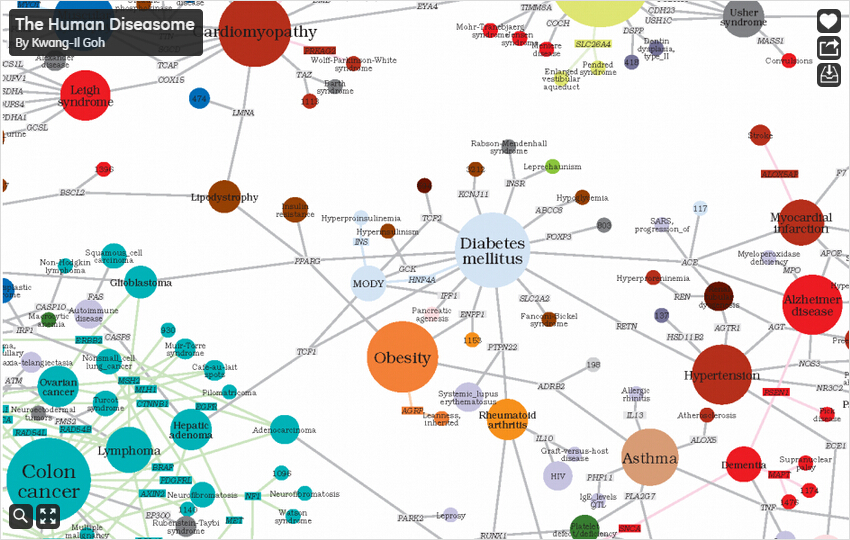

This part is quoted from the books of Kirk (2012), p.150
In the field of data analysis, the concept of network analysis becoming increasingly popular. Instead of only look at attributes of data, network analysts also focus on the connections between data and the resulting structures. It focuses on relationships instead of just the individual elements that can explain social, cultural, or economic phenomena; how the elements are connected is just as important as the elements themselves.
Description: At first glance, network diagrams, can look quite daunting through their visual complexity and apparent clutter (indeed, often they are described as "hairballs"). Their intention and value is to facilitate exploration of complex data frameworks based on the existence or quantifiable strength of relationships, connections, and logical organization. The typical purpose of these graphs is to enable the viewer to get a sense of patterns—picking out the elements that are of interest, observing clusters and gaps, dominant nodes and sparse connections.
